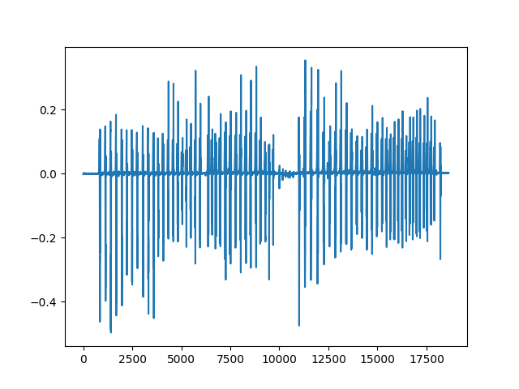

Note
Click here to download the full example code
Gait (steps) example¶
In this example, we use DiCoDiLe on an open dataset of gait (steps) IMU time-series to discover patterns in the data. We will then use those to attempt to detect steps and compare our findings with the ground truth.
import matplotlib.pyplot as plt
import numpy as np
from dicodile.data.gait import get_gait_data
from dicodile.utils.dictionary import init_dictionary
from dicodile.utils.viz import display_dictionaries
from dicodile.utils.csc import reconstruct
from dicodile import dicodile
Retrieve trial data¶
Out:
Downloading data from http://dev.ipol.im/~truong/GaitData.zip (192.3 MB)
file_sizes: 0%| | 0.00/202M [00:00<?, ?B/s]
file_sizes: 0%| | 24.6k/202M [00:00<20:24, 165kB/s]
file_sizes: 0%| | 49.2k/202M [00:00<20:26, 164kB/s]
file_sizes: 0%| | 106k/202M [00:00<12:42, 264kB/s]
file_sizes: 0%| | 221k/202M [00:00<07:15, 462kB/s]
file_sizes: 0%| | 451k/202M [00:00<03:57, 848kB/s]
file_sizes: 0%|1 | 909k/202M [00:00<02:05, 1.60MB/s]
file_sizes: 1%|2 | 1.83M/202M [00:01<01:05, 3.07MB/s]
file_sizes: 2%|4 | 3.66M/202M [00:01<00:33, 5.99MB/s]
file_sizes: 4%|# | 7.59M/202M [00:01<00:16, 12.0MB/s]
file_sizes: 5%|#3 | 10.2M/202M [00:01<00:14, 13.7MB/s]
file_sizes: 6%|#6 | 12.6M/202M [00:01<00:13, 14.1MB/s]
file_sizes: 7%|#9 | 14.7M/202M [00:01<00:13, 13.8MB/s]
file_sizes: 8%|##2 | 16.8M/202M [00:01<00:13, 14.0MB/s]
file_sizes: 10%|##5 | 19.4M/202M [00:02<00:12, 15.1MB/s]
file_sizes: 11%|##9 | 22.0M/202M [00:02<00:11, 15.8MB/s]
file_sizes: 13%|###4 | 25.7M/202M [00:02<00:09, 18.0MB/s]
file_sizes: 14%|###7 | 27.8M/202M [00:02<00:10, 16.1MB/s]
file_sizes: 15%|####1 | 30.9M/202M [00:02<00:09, 17.2MB/s]
file_sizes: 17%|####5 | 34.1M/202M [00:02<00:09, 18.2MB/s]
file_sizes: 18%|####9 | 37.2M/202M [00:03<00:08, 18.7MB/s]
file_sizes: 20%|#####3 | 39.8M/202M [00:03<00:08, 18.9MB/s]
file_sizes: 21%|#####7 | 42.7M/202M [00:03<00:08, 18.0MB/s]
file_sizes: 22%|###### | 44.8M/202M [00:03<00:12, 12.8MB/s]
file_sizes: 23%|######2 | 46.9M/202M [00:03<00:11, 13.4MB/s]
file_sizes: 25%|######6 | 49.5M/202M [00:04<00:10, 14.0MB/s]
file_sizes: 25%|######8 | 51.1M/202M [00:04<00:11, 13.0MB/s]
file_sizes: 26%|####### | 52.7M/202M [00:04<00:12, 12.4MB/s]
file_sizes: 27%|#######2 | 54.0M/202M [00:04<00:12, 11.4MB/s]
file_sizes: 27%|#######4 | 55.3M/202M [00:04<00:13, 10.9MB/s]
file_sizes: 28%|#######6 | 56.9M/202M [00:04<00:13, 10.7MB/s]
file_sizes: 29%|#######8 | 58.4M/202M [00:04<00:13, 10.7MB/s]
file_sizes: 30%|######## | 60.3M/202M [00:05<00:12, 11.1MB/s]
file_sizes: 31%|########2 | 61.6M/202M [00:05<00:13, 10.5MB/s]
file_sizes: 31%|########4 | 63.4M/202M [00:05<00:16, 8.43MB/s]
file_sizes: 33%|########8 | 66.3M/202M [00:05<00:12, 11.0MB/s]
file_sizes: 34%|######### | 67.6M/202M [00:05<00:16, 8.35MB/s]
file_sizes: 34%|#########2 | 68.9M/202M [00:06<00:15, 8.43MB/s]
file_sizes: 35%|#########3 | 70.0M/202M [00:06<00:20, 6.47MB/s]
file_sizes: 35%|#########5 | 71.4M/202M [00:06<00:18, 7.10MB/s]
file_sizes: 36%|#########6 | 72.3M/202M [00:06<00:23, 5.60MB/s]
file_sizes: 36%|#########7 | 73.1M/202M [00:06<00:23, 5.49MB/s]
file_sizes: 37%|#########8 | 73.8M/202M [00:07<00:24, 5.23MB/s]
file_sizes: 37%|#########9 | 74.4M/202M [00:07<00:25, 5.01MB/s]
file_sizes: 37%|########## | 75.1M/202M [00:07<00:26, 4.84MB/s]
file_sizes: 38%|##########1 | 75.6M/202M [00:07<00:28, 4.49MB/s]
file_sizes: 38%|##########2 | 76.3M/202M [00:07<00:35, 3.48MB/s]
file_sizes: 38%|##########3 | 77.2M/202M [00:08<00:30, 4.10MB/s]
file_sizes: 39%|##########4 | 77.7M/202M [00:08<00:31, 3.93MB/s]
file_sizes: 39%|##########4 | 78.2M/202M [00:08<00:32, 3.81MB/s]
file_sizes: 39%|##########5 | 78.8M/202M [00:08<00:33, 3.72MB/s]
file_sizes: 39%|##########5 | 79.2M/202M [00:08<00:35, 3.40MB/s]
file_sizes: 39%|##########6 | 79.6M/202M [00:08<00:37, 3.23MB/s]
file_sizes: 40%|##########7 | 80.1M/202M [00:08<00:36, 3.29MB/s]
file_sizes: 40%|##########7 | 80.6M/202M [00:09<00:36, 3.35MB/s]
file_sizes: 40%|##########8 | 81.1M/202M [00:09<00:35, 3.37MB/s]
file_sizes: 41%|##########9 | 81.8M/202M [00:09<00:32, 3.63MB/s]
file_sizes: 41%|########### | 82.2M/202M [00:09<00:35, 3.36MB/s]
file_sizes: 41%|########### | 82.8M/202M [00:09<00:32, 3.63MB/s]
file_sizes: 41%|###########1 | 83.2M/202M [00:09<00:35, 3.36MB/s]
file_sizes: 42%|###########2 | 83.9M/202M [00:10<00:32, 3.62MB/s]
file_sizes: 42%|###########2 | 84.3M/202M [00:10<00:34, 3.38MB/s]
file_sizes: 42%|###########3 | 84.8M/202M [00:10<00:34, 3.42MB/s]
file_sizes: 42%|###########4 | 85.3M/202M [00:10<00:33, 3.47MB/s]
file_sizes: 43%|###########5 | 86.1M/202M [00:10<00:38, 3.04MB/s]
file_sizes: 43%|###########6 | 87.0M/202M [00:10<00:30, 3.74MB/s]
file_sizes: 43%|###########7 | 87.5M/202M [00:11<00:40, 2.85MB/s]
file_sizes: 44%|###########8 | 88.1M/202M [00:11<00:36, 3.13MB/s]
file_sizes: 44%|###########8 | 88.5M/202M [00:11<00:45, 2.47MB/s]
file_sizes: 44%|###########8 | 88.9M/202M [00:11<00:47, 2.40MB/s]
file_sizes: 44%|###########9 | 89.2M/202M [00:11<00:48, 2.31MB/s]
file_sizes: 44%|###########9 | 89.4M/202M [00:12<00:51, 2.18MB/s]
file_sizes: 44%|############ | 89.7M/202M [00:12<00:54, 2.05MB/s]
file_sizes: 45%|############ | 90.0M/202M [00:12<01:11, 1.57MB/s]
file_sizes: 45%|############ | 90.2M/202M [00:12<01:09, 1.60MB/s]
file_sizes: 45%|############1 | 90.5M/202M [00:13<01:27, 1.27MB/s]
file_sizes: 45%|############1 | 90.6M/202M [00:13<01:29, 1.23MB/s]
file_sizes: 45%|############1 | 90.8M/202M [00:13<01:32, 1.19MB/s]
file_sizes: 45%|############1 | 91.0M/202M [00:13<01:26, 1.28MB/s]
file_sizes: 45%|############2 | 91.2M/202M [00:13<01:38, 1.12MB/s]
file_sizes: 45%|############2 | 91.4M/202M [00:13<01:34, 1.17MB/s]
file_sizes: 45%|############7 | 91.5M/202M [00:14<01:52, 979kB/s]
file_sizes: 45%|############7 | 91.7M/202M [00:14<01:50, 996kB/s]
file_sizes: 46%|############7 | 91.8M/202M [00:14<01:53, 965kB/s]
file_sizes: 46%|############7 | 92.0M/202M [00:14<01:56, 941kB/s]
file_sizes: 46%|############7 | 92.1M/202M [00:14<02:07, 859kB/s]
file_sizes: 46%|############8 | 92.3M/202M [00:14<02:19, 787kB/s]
file_sizes: 46%|############8 | 92.4M/202M [00:15<02:18, 789kB/s]
file_sizes: 46%|############8 | 92.5M/202M [00:15<02:24, 756kB/s]
file_sizes: 46%|############8 | 92.6M/202M [00:15<02:29, 730kB/s]
file_sizes: 46%|############8 | 92.7M/202M [00:15<02:33, 709kB/s]
file_sizes: 46%|############8 | 92.8M/202M [00:15<02:50, 638kB/s]
file_sizes: 46%|############8 | 92.9M/202M [00:15<02:36, 695kB/s]
file_sizes: 46%|############9 | 93.0M/202M [00:16<02:46, 652kB/s]
file_sizes: 46%|############9 | 93.1M/202M [00:16<03:00, 603kB/s]
file_sizes: 46%|############9 | 93.2M/202M [00:16<03:04, 587kB/s]
file_sizes: 46%|############9 | 93.2M/202M [00:16<03:08, 576kB/s]
file_sizes: 46%|############9 | 93.3M/202M [00:16<03:11, 567kB/s]
file_sizes: 46%|############9 | 93.4M/202M [00:16<03:07, 577kB/s]
file_sizes: 46%|############9 | 93.4M/202M [00:16<03:22, 534kB/s]
file_sizes: 46%|############9 | 93.5M/202M [00:17<03:19, 542kB/s]
file_sizes: 46%|############9 | 93.6M/202M [00:17<03:27, 521kB/s]
file_sizes: 46%|############# | 93.7M/202M [00:17<03:23, 529kB/s]
file_sizes: 46%|############# | 93.8M/202M [00:17<03:08, 574kB/s]
file_sizes: 47%|############# | 93.9M/202M [00:17<03:13, 558kB/s]
file_sizes: 47%|############# | 93.9M/202M [00:17<03:00, 596kB/s]
file_sizes: 47%|############# | 94.0M/202M [00:17<03:07, 573kB/s]
file_sizes: 47%|############# | 94.1M/202M [00:18<02:57, 607kB/s]
file_sizes: 47%|############# | 94.2M/202M [00:18<03:05, 580kB/s]
file_sizes: 47%|############# | 94.3M/202M [00:18<03:08, 569kB/s]
file_sizes: 47%|#############1 | 94.4M/202M [00:18<02:53, 619kB/s]
file_sizes: 47%|#############1 | 94.5M/202M [00:18<03:06, 573kB/s]
file_sizes: 47%|#############1 | 94.6M/202M [00:18<02:52, 622kB/s]
file_sizes: 47%|#############1 | 94.7M/202M [00:19<03:06, 575kB/s]
file_sizes: 47%|#############1 | 94.7M/202M [00:19<02:58, 600kB/s]
file_sizes: 47%|#############1 | 94.8M/202M [00:19<03:03, 582kB/s]
file_sizes: 47%|#############1 | 94.9M/202M [00:19<02:56, 606kB/s]
file_sizes: 47%|#############1 | 95.0M/202M [00:19<03:01, 587kB/s]
file_sizes: 47%|#############2 | 95.1M/202M [00:19<02:54, 609kB/s]
file_sizes: 47%|#############2 | 95.2M/202M [00:19<03:00, 589kB/s]
file_sizes: 47%|#############2 | 95.3M/202M [00:20<02:54, 608kB/s]
file_sizes: 47%|#############2 | 95.4M/202M [00:20<02:53, 614kB/s]
file_sizes: 47%|#############2 | 95.5M/202M [00:20<02:55, 604kB/s]
file_sizes: 47%|#############2 | 95.6M/202M [00:20<02:45, 641kB/s]
file_sizes: 47%|#############2 | 95.7M/202M [00:20<02:44, 645kB/s]
file_sizes: 47%|#############2 | 95.8M/202M [00:20<03:52, 456kB/s]
file_sizes: 48%|#############3 | 96.0M/202M [00:21<02:43, 648kB/s]
file_sizes: 48%|#############3 | 96.0M/202M [00:21<03:02, 579kB/s]
file_sizes: 48%|#############3 | 96.1M/202M [00:21<03:00, 586kB/s]
file_sizes: 48%|#############3 | 96.2M/202M [00:21<03:13, 544kB/s]
file_sizes: 48%|#############3 | 96.2M/202M [00:21<03:26, 512kB/s]
file_sizes: 48%|#############3 | 96.3M/202M [00:21<03:21, 522kB/s]
file_sizes: 48%|#############3 | 96.4M/202M [00:22<03:23, 517kB/s]
file_sizes: 48%|#############3 | 96.5M/202M [00:22<03:12, 548kB/s]
file_sizes: 48%|#############4 | 96.5M/202M [00:22<03:20, 525kB/s]
file_sizes: 48%|#############4 | 96.7M/202M [00:22<02:59, 586kB/s]
file_sizes: 48%|#############4 | 96.7M/202M [00:22<03:09, 553kB/s]
file_sizes: 48%|#############4 | 96.8M/202M [00:22<02:53, 604kB/s]
file_sizes: 48%|#############4 | 96.9M/202M [00:22<03:04, 567kB/s]
file_sizes: 48%|#############4 | 97.0M/202M [00:23<02:49, 619kB/s]
file_sizes: 48%|#############4 | 97.1M/202M [00:23<02:47, 624kB/s]
file_sizes: 48%|#############4 | 97.2M/202M [00:23<02:44, 634kB/s]
file_sizes: 48%|#############5 | 97.3M/202M [00:23<02:58, 585kB/s]
file_sizes: 48%|#############5 | 97.4M/202M [00:23<02:43, 639kB/s]
file_sizes: 48%|#############5 | 97.5M/202M [00:23<02:41, 644kB/s]
file_sizes: 48%|#############5 | 97.6M/202M [00:23<02:40, 648kB/s]
file_sizes: 48%|#############5 | 97.7M/202M [00:24<02:41, 645kB/s]
file_sizes: 48%|#############5 | 97.8M/202M [00:24<02:41, 643kB/s]
file_sizes: 49%|#############5 | 97.9M/202M [00:24<02:40, 646kB/s]
file_sizes: 49%|#############6 | 98.0M/202M [00:24<02:39, 649kB/s]
file_sizes: 49%|#############6 | 98.1M/202M [00:24<02:39, 651kB/s]
file_sizes: 49%|#############6 | 98.1M/202M [00:24<02:53, 598kB/s]
file_sizes: 49%|#############6 | 98.3M/202M [00:25<02:39, 648kB/s]
file_sizes: 49%|#############6 | 98.4M/202M [00:25<02:39, 646kB/s]
file_sizes: 49%|#############6 | 98.5M/202M [00:25<02:38, 649kB/s]
file_sizes: 49%|#############6 | 98.5M/202M [00:25<02:53, 594kB/s]
file_sizes: 49%|#############7 | 98.7M/202M [00:25<02:43, 628kB/s]
file_sizes: 49%|#############7 | 98.8M/202M [00:25<03:18, 519kB/s]
file_sizes: 49%|#############7 | 98.8M/202M [00:26<03:15, 526kB/s]
file_sizes: 49%|#############7 | 98.9M/202M [00:26<03:24, 502kB/s]
file_sizes: 49%|#############7 | 99.0M/202M [00:26<03:20, 513kB/s]
file_sizes: 49%|#############7 | 99.1M/202M [00:26<03:05, 552kB/s]
file_sizes: 49%|#############7 | 99.2M/202M [00:26<03:06, 550kB/s]
file_sizes: 49%|#############7 | 99.3M/202M [00:26<02:57, 575kB/s]
file_sizes: 49%|#############7 | 99.3M/202M [00:26<02:58, 574kB/s]
file_sizes: 49%|#############8 | 99.4M/202M [00:27<03:00, 566kB/s]
file_sizes: 49%|#############8 | 99.5M/202M [00:27<02:53, 589kB/s]
file_sizes: 49%|#############8 | 99.6M/202M [00:27<02:47, 609kB/s]
file_sizes: 49%|#############8 | 99.7M/202M [00:27<02:44, 619kB/s]
file_sizes: 49%|#############8 | 99.8M/202M [00:27<02:47, 608kB/s]
file_sizes: 50%|#############8 | 99.9M/202M [00:27<02:43, 622kB/s]
file_sizes: 50%|##############3 | 100M/202M [00:27<02:40, 633kB/s]
file_sizes: 50%|##############3 | 100M/202M [00:28<02:38, 640kB/s]
file_sizes: 50%|##############4 | 100M/202M [00:28<02:47, 607kB/s]
file_sizes: 50%|##############4 | 100M/202M [00:28<02:43, 622kB/s]
file_sizes: 50%|##############4 | 100M/202M [00:28<02:40, 632kB/s]
file_sizes: 50%|##############4 | 100M/202M [00:28<02:38, 639kB/s]
file_sizes: 50%|##############4 | 101M/202M [00:28<02:36, 644kB/s]
file_sizes: 50%|##############4 | 101M/202M [00:29<02:36, 644kB/s]
file_sizes: 50%|##############4 | 101M/202M [00:29<02:35, 648kB/s]
file_sizes: 50%|##############5 | 101M/202M [00:29<02:36, 645kB/s]
file_sizes: 50%|##############5 | 101M/202M [00:29<02:35, 648kB/s]
file_sizes: 50%|##############5 | 101M/202M [00:29<02:40, 627kB/s]
file_sizes: 50%|##############5 | 101M/202M [00:29<02:37, 636kB/s]
file_sizes: 50%|##############5 | 101M/202M [00:29<02:36, 643kB/s]
file_sizes: 50%|##############5 | 101M/202M [00:30<02:35, 647kB/s]
file_sizes: 50%|##############5 | 101M/202M [00:30<02:34, 649kB/s]
file_sizes: 50%|##############6 | 102M/202M [00:30<02:33, 651kB/s]
file_sizes: 50%|##############6 | 102M/202M [00:30<02:33, 652kB/s]
file_sizes: 50%|##############6 | 102M/202M [00:30<02:33, 651kB/s]
file_sizes: 50%|##############6 | 102M/202M [00:30<02:32, 653kB/s]
file_sizes: 51%|##############6 | 102M/202M [00:30<02:32, 654kB/s]
file_sizes: 51%|##############6 | 102M/202M [00:31<02:32, 654kB/s]
file_sizes: 51%|##############6 | 102M/202M [00:31<02:32, 654kB/s]
file_sizes: 51%|##############6 | 102M/202M [00:31<02:32, 652kB/s]
file_sizes: 51%|##############7 | 102M/202M [00:31<02:32, 653kB/s]
file_sizes: 51%|##############7 | 102M/202M [00:31<02:26, 679kB/s]
file_sizes: 51%|##############7 | 103M/202M [00:31<02:27, 673kB/s]
file_sizes: 51%|##############7 | 103M/202M [00:32<02:19, 709kB/s]
file_sizes: 51%|##############7 | 103M/202M [00:32<02:22, 692kB/s]
file_sizes: 51%|##############7 | 103M/202M [00:32<02:19, 706kB/s]
file_sizes: 51%|##############8 | 103M/202M [00:32<02:14, 733kB/s]
file_sizes: 51%|##############8 | 103M/202M [00:32<02:14, 733kB/s]
file_sizes: 51%|##############8 | 103M/202M [00:32<02:10, 753kB/s]
file_sizes: 51%|##############8 | 103M/202M [00:32<02:04, 790kB/s]
file_sizes: 51%|##############8 | 103M/202M [00:33<02:00, 815kB/s]
file_sizes: 51%|##############9 | 104M/202M [00:33<01:56, 843kB/s]
file_sizes: 51%|##############9 | 104M/202M [00:33<01:54, 852kB/s]
file_sizes: 52%|##############9 | 104M/202M [00:33<01:53, 865kB/s]
file_sizes: 52%|##############9 | 104M/202M [00:33<01:52, 868kB/s]
file_sizes: 52%|##############9 | 104M/202M [00:33<01:45, 924kB/s]
file_sizes: 52%|##############9 | 104M/202M [00:33<01:42, 948kB/s]
file_sizes: 52%|##############4 | 104M/202M [00:34<01:36, 1.01MB/s]
file_sizes: 52%|############### | 105M/202M [00:34<01:40, 968kB/s]
file_sizes: 52%|############### | 105M/202M [00:34<01:37, 996kB/s]
file_sizes: 52%|##############5 | 105M/202M [00:34<01:34, 1.03MB/s]
file_sizes: 52%|##############5 | 105M/202M [00:34<01:26, 1.12MB/s]
file_sizes: 52%|##############6 | 105M/202M [00:34<01:21, 1.18MB/s]
file_sizes: 52%|##############6 | 105M/202M [00:34<01:19, 1.22MB/s]
file_sizes: 52%|###############1 | 106M/202M [00:35<01:36, 998kB/s]
file_sizes: 53%|##############7 | 106M/202M [00:35<01:24, 1.13MB/s]
file_sizes: 53%|##############7 | 106M/202M [00:35<01:25, 1.12MB/s]
file_sizes: 53%|##############7 | 106M/202M [00:35<01:34, 1.01MB/s]
file_sizes: 53%|###############3 | 106M/202M [00:36<01:37, 977kB/s]
file_sizes: 53%|###############3 | 107M/202M [00:36<01:46, 895kB/s]
file_sizes: 53%|###############3 | 107M/202M [00:36<01:54, 831kB/s]
file_sizes: 53%|###############3 | 107M/202M [00:36<01:55, 819kB/s]
file_sizes: 53%|###############3 | 107M/202M [00:36<01:55, 824kB/s]
file_sizes: 53%|###############3 | 107M/202M [00:36<01:55, 821kB/s]
file_sizes: 53%|###############4 | 107M/202M [00:36<01:57, 803kB/s]
file_sizes: 53%|###############4 | 107M/202M [00:37<01:56, 812kB/s]
file_sizes: 53%|###############4 | 107M/202M [00:37<01:51, 850kB/s]
file_sizes: 53%|###############4 | 107M/202M [00:37<01:48, 865kB/s]
file_sizes: 53%|###############4 | 108M/202M [00:37<01:48, 868kB/s]
file_sizes: 53%|###############4 | 108M/202M [00:37<01:48, 868kB/s]
file_sizes: 53%|###############5 | 108M/202M [00:37<01:56, 804kB/s]
file_sizes: 53%|###############5 | 108M/202M [00:37<01:57, 801kB/s]
file_sizes: 54%|###############5 | 108M/202M [00:37<01:53, 825kB/s]
file_sizes: 54%|###############5 | 108M/202M [00:38<01:53, 822kB/s]
file_sizes: 54%|###############5 | 108M/202M [00:38<01:51, 835kB/s]
file_sizes: 54%|###############5 | 108M/202M [00:38<01:50, 847kB/s]
file_sizes: 54%|###############6 | 109M/202M [00:38<01:49, 854kB/s]
file_sizes: 54%|###############6 | 109M/202M [00:38<02:25, 637kB/s]
file_sizes: 54%|###############6 | 109M/202M [00:38<02:02, 756kB/s]
file_sizes: 54%|###############6 | 109M/202M [00:39<02:14, 690kB/s]
file_sizes: 54%|###############6 | 109M/202M [00:39<02:16, 681kB/s]
file_sizes: 54%|###############6 | 109M/202M [00:39<02:09, 715kB/s]
file_sizes: 54%|###############6 | 109M/202M [00:39<02:12, 698kB/s]
file_sizes: 54%|###############7 | 109M/202M [00:39<02:08, 720kB/s]
file_sizes: 54%|###############7 | 109M/202M [00:39<02:11, 701kB/s]
file_sizes: 54%|###############7 | 109M/202M [00:39<02:02, 751kB/s]
file_sizes: 54%|###############7 | 110M/202M [00:40<02:01, 756kB/s]
file_sizes: 54%|###############7 | 110M/202M [00:40<01:58, 775kB/s]
file_sizes: 54%|###############7 | 110M/202M [00:40<02:00, 762kB/s]
file_sizes: 55%|###############8 | 110M/202M [00:40<01:55, 791kB/s]
file_sizes: 55%|###############8 | 110M/202M [00:40<02:01, 756kB/s]
file_sizes: 55%|###############8 | 110M/202M [00:40<01:59, 768kB/s]
file_sizes: 55%|###############8 | 110M/202M [00:40<01:51, 817kB/s]
file_sizes: 55%|###############8 | 110M/202M [00:41<01:49, 834kB/s]
file_sizes: 55%|###############8 | 111M/202M [00:41<01:49, 831kB/s]
file_sizes: 55%|###############9 | 111M/202M [00:41<01:53, 799kB/s]
file_sizes: 55%|###############9 | 111M/202M [00:41<01:50, 821kB/s]
file_sizes: 55%|###############9 | 111M/202M [00:41<01:48, 837kB/s]
file_sizes: 55%|###############9 | 111M/202M [00:41<01:46, 848kB/s]
file_sizes: 55%|###############9 | 111M/202M [00:41<01:46, 853kB/s]
file_sizes: 55%|################ | 111M/202M [00:42<01:45, 860kB/s]
file_sizes: 55%|################ | 111M/202M [00:42<01:44, 864kB/s]
file_sizes: 55%|################ | 112M/202M [00:42<01:43, 867kB/s]
file_sizes: 55%|################ | 112M/202M [00:42<01:43, 868kB/s]
file_sizes: 55%|################ | 112M/202M [00:42<01:51, 808kB/s]
file_sizes: 55%|################ | 112M/202M [00:42<01:51, 809kB/s]
file_sizes: 56%|################1 | 112M/202M [00:43<01:48, 829kB/s]
file_sizes: 56%|################1 | 112M/202M [00:43<01:46, 844kB/s]
file_sizes: 56%|################1 | 112M/202M [00:43<01:44, 853kB/s]
file_sizes: 56%|################1 | 112M/202M [00:43<01:43, 860kB/s]
file_sizes: 56%|################1 | 113M/202M [00:43<01:41, 875kB/s]
file_sizes: 56%|################2 | 113M/202M [00:43<01:41, 875kB/s]
file_sizes: 56%|################2 | 113M/202M [00:44<02:11, 677kB/s]
file_sizes: 56%|################2 | 113M/202M [00:44<01:54, 777kB/s]
file_sizes: 56%|################2 | 113M/202M [00:44<01:54, 772kB/s]
file_sizes: 56%|################2 | 113M/202M [00:44<01:58, 748kB/s]
file_sizes: 56%|################3 | 113M/202M [00:44<02:28, 594kB/s]
file_sizes: 56%|################3 | 114M/202M [00:45<02:15, 649kB/s]
file_sizes: 56%|################3 | 114M/202M [00:45<02:45, 531kB/s]
file_sizes: 56%|################3 | 114M/202M [00:45<02:31, 579kB/s]
file_sizes: 56%|################3 | 114M/202M [00:45<03:08, 466kB/s]
file_sizes: 57%|################3 | 114M/202M [00:46<03:26, 425kB/s]
file_sizes: 57%|################3 | 114M/202M [00:46<03:52, 378kB/s]
file_sizes: 57%|################4 | 114M/202M [00:46<03:58, 367kB/s]
file_sizes: 57%|################4 | 114M/202M [00:46<04:05, 357kB/s]
file_sizes: 57%|################4 | 114M/202M [00:46<04:10, 350kB/s]
file_sizes: 57%|################4 | 114M/202M [00:47<04:14, 344kB/s]
file_sizes: 57%|################4 | 114M/202M [00:47<04:17, 339kB/s]
file_sizes: 57%|################4 | 114M/202M [00:47<04:19, 336kB/s]
file_sizes: 57%|################4 | 114M/202M [00:47<04:21, 334kB/s]
file_sizes: 57%|################4 | 114M/202M [00:47<04:51, 299kB/s]
file_sizes: 57%|################4 | 114M/202M [00:47<04:44, 307kB/s]
file_sizes: 57%|################4 | 115M/202M [00:47<04:38, 313kB/s]
file_sizes: 57%|################4 | 115M/202M [00:48<04:34, 317kB/s]
file_sizes: 57%|################4 | 115M/202M [00:48<06:29, 223kB/s]
file_sizes: 57%|################4 | 115M/202M [00:48<04:49, 300kB/s]
file_sizes: 57%|################5 | 115M/202M [00:48<05:38, 256kB/s]
file_sizes: 57%|################5 | 115M/202M [00:49<05:22, 269kB/s]
file_sizes: 57%|################5 | 115M/202M [00:49<05:32, 261kB/s]
file_sizes: 57%|################5 | 115M/202M [00:49<05:16, 274kB/s]
file_sizes: 57%|################5 | 115M/202M [00:49<05:29, 263kB/s]
file_sizes: 57%|################5 | 115M/202M [00:49<05:08, 281kB/s]
file_sizes: 57%|################5 | 115M/202M [00:49<04:58, 290kB/s]
file_sizes: 57%|################5 | 115M/202M [00:49<04:47, 301kB/s]
file_sizes: 57%|################5 | 115M/202M [00:50<04:40, 309kB/s]
file_sizes: 57%|################5 | 115M/202M [00:50<04:34, 315kB/s]
file_sizes: 57%|################5 | 115M/202M [00:50<04:31, 319kB/s]
file_sizes: 57%|################5 | 115M/202M [00:50<04:28, 322kB/s]
file_sizes: 57%|################5 | 115M/202M [00:50<04:26, 323kB/s]
file_sizes: 57%|################5 | 115M/202M [00:50<04:25, 325kB/s]
file_sizes: 57%|################5 | 115M/202M [00:50<04:24, 326kB/s]
file_sizes: 57%|################6 | 115M/202M [00:51<04:24, 326kB/s]
file_sizes: 57%|################6 | 115M/202M [00:51<04:23, 327kB/s]
file_sizes: 57%|################6 | 116M/202M [00:51<05:43, 251kB/s]
file_sizes: 57%|################6 | 116M/202M [00:51<04:38, 309kB/s]
file_sizes: 57%|################6 | 116M/202M [00:51<04:55, 291kB/s]
file_sizes: 57%|################6 | 116M/202M [00:52<05:02, 285kB/s]
file_sizes: 57%|################6 | 116M/202M [00:52<05:03, 283kB/s]
file_sizes: 57%|################6 | 116M/202M [00:52<05:07, 279kB/s]
file_sizes: 57%|################6 | 116M/202M [00:52<04:57, 288kB/s]
file_sizes: 57%|################6 | 116M/202M [00:52<04:47, 298kB/s]
file_sizes: 57%|################6 | 116M/202M [00:52<05:09, 277kB/s]
file_sizes: 58%|################6 | 116M/202M [00:53<04:54, 291kB/s]
file_sizes: 58%|################6 | 116M/202M [00:53<04:44, 301kB/s]
file_sizes: 58%|################6 | 116M/202M [00:53<04:36, 309kB/s]
file_sizes: 58%|################6 | 116M/202M [00:53<04:31, 315kB/s]
file_sizes: 58%|################7 | 116M/202M [00:53<04:28, 319kB/s]
file_sizes: 58%|################7 | 116M/202M [00:53<04:25, 321kB/s]
file_sizes: 58%|################7 | 116M/202M [00:53<04:50, 294kB/s]
file_sizes: 58%|################7 | 116M/202M [00:54<04:15, 334kB/s]
file_sizes: 58%|################7 | 116M/202M [00:54<04:30, 315kB/s]
file_sizes: 58%|################7 | 116M/202M [00:54<05:11, 273kB/s]
file_sizes: 58%|################7 | 116M/202M [00:54<05:09, 276kB/s]
file_sizes: 58%|################7 | 116M/202M [00:54<05:02, 282kB/s]
file_sizes: 58%|################7 | 117M/202M [00:54<05:25, 262kB/s]
file_sizes: 58%|################7 | 117M/202M [00:54<05:20, 265kB/s]
file_sizes: 58%|################7 | 117M/202M [00:55<05:12, 273kB/s]
file_sizes: 58%|################7 | 117M/202M [00:55<04:59, 284kB/s]
file_sizes: 58%|################7 | 117M/202M [00:55<04:30, 314kB/s]
file_sizes: 58%|################7 | 117M/202M [00:55<04:52, 290kB/s]
file_sizes: 58%|################7 | 117M/202M [00:55<04:41, 302kB/s]
file_sizes: 58%|################8 | 117M/202M [00:55<04:34, 310kB/s]
file_sizes: 58%|################8 | 117M/202M [00:56<04:28, 315kB/s]
file_sizes: 58%|################8 | 117M/202M [00:56<04:04, 346kB/s]
file_sizes: 58%|################8 | 117M/202M [00:56<04:08, 341kB/s]
file_sizes: 58%|################8 | 117M/202M [00:56<04:11, 337kB/s]
file_sizes: 58%|################8 | 117M/202M [00:56<04:13, 334kB/s]
file_sizes: 58%|################8 | 117M/202M [00:56<04:27, 316kB/s]
file_sizes: 58%|################8 | 117M/202M [00:56<04:11, 336kB/s]
file_sizes: 58%|################8 | 117M/202M [00:57<04:13, 333kB/s]
file_sizes: 58%|################8 | 117M/202M [00:57<04:14, 331kB/s]
file_sizes: 58%|################8 | 117M/202M [00:57<04:15, 330kB/s]
file_sizes: 58%|################8 | 117M/202M [00:57<04:16, 329kB/s]
file_sizes: 58%|################8 | 117M/202M [00:57<04:16, 329kB/s]
file_sizes: 58%|################8 | 117M/202M [00:57<04:16, 328kB/s]
file_sizes: 58%|################9 | 118M/202M [00:57<04:16, 328kB/s]
file_sizes: 58%|################9 | 118M/202M [00:58<04:09, 337kB/s]
file_sizes: 58%|################9 | 118M/202M [00:58<04:11, 334kB/s]
file_sizes: 58%|################9 | 118M/202M [00:58<03:55, 356kB/s]
file_sizes: 58%|################9 | 118M/202M [00:58<04:01, 348kB/s]
file_sizes: 58%|################9 | 118M/202M [00:58<03:58, 351kB/s]
file_sizes: 58%|################9 | 118M/202M [00:58<03:47, 368kB/s]
file_sizes: 58%|################9 | 118M/202M [00:58<03:49, 365kB/s]
file_sizes: 59%|################9 | 118M/202M [00:59<03:41, 377kB/s]
file_sizes: 59%|################9 | 118M/202M [00:59<03:46, 370kB/s]
file_sizes: 59%|################9 | 118M/202M [00:59<03:38, 383kB/s]
file_sizes: 59%|################9 | 118M/202M [00:59<03:43, 373kB/s]
file_sizes: 59%|################9 | 118M/202M [00:59<03:32, 392kB/s]
file_sizes: 59%|################# | 118M/202M [00:59<03:25, 406kB/s]
file_sizes: 59%|################# | 118M/202M [01:00<03:20, 415kB/s]
file_sizes: 59%|################# | 118M/202M [01:00<03:17, 422kB/s]
file_sizes: 59%|################# | 118M/202M [01:00<03:14, 427kB/s]
file_sizes: 59%|################# | 119M/202M [01:00<03:13, 430kB/s]
file_sizes: 59%|################# | 119M/202M [01:00<02:49, 489kB/s]
file_sizes: 59%|################# | 119M/202M [01:00<02:55, 474kB/s]
file_sizes: 59%|################# | 119M/202M [01:00<02:55, 471kB/s]
file_sizes: 59%|################# | 119M/202M [01:01<02:37, 526kB/s]
file_sizes: 59%|#################1 | 119M/202M [01:01<02:28, 557kB/s]
file_sizes: 59%|#################1 | 119M/202M [01:01<02:37, 524kB/s]
file_sizes: 59%|#################1 | 119M/202M [01:01<02:18, 596kB/s]
file_sizes: 59%|#################1 | 119M/202M [01:01<02:14, 614kB/s]
file_sizes: 59%|#################1 | 119M/202M [01:01<02:11, 625kB/s]
file_sizes: 59%|#################1 | 119M/202M [01:02<01:47, 761kB/s]
file_sizes: 59%|#################1 | 120M/202M [01:02<01:52, 731kB/s]
file_sizes: 59%|#################2 | 120M/202M [01:02<01:45, 774kB/s]
file_sizes: 59%|#################2 | 120M/202M [01:02<01:50, 742kB/s]
file_sizes: 60%|#################2 | 120M/202M [01:02<01:36, 846kB/s]
file_sizes: 60%|#################2 | 120M/202M [01:02<01:28, 919kB/s]
file_sizes: 60%|#################3 | 120M/202M [01:02<01:23, 972kB/s]
file_sizes: 60%|#################3 | 120M/202M [01:03<01:26, 944kB/s]
file_sizes: 60%|################7 | 121M/202M [01:03<01:12, 1.12MB/s]
file_sizes: 60%|################7 | 121M/202M [01:03<01:17, 1.05MB/s]
file_sizes: 60%|################8 | 121M/202M [01:03<01:07, 1.19MB/s]
file_sizes: 60%|################8 | 121M/202M [01:03<01:05, 1.23MB/s]
file_sizes: 60%|################8 | 121M/202M [01:03<01:10, 1.14MB/s]
file_sizes: 60%|################8 | 122M/202M [01:03<01:01, 1.30MB/s]
file_sizes: 60%|################9 | 122M/202M [01:04<01:04, 1.24MB/s]
file_sizes: 60%|################9 | 122M/202M [01:04<01:10, 1.13MB/s]
file_sizes: 61%|################9 | 122M/202M [01:04<01:11, 1.12MB/s]
file_sizes: 61%|################9 | 122M/202M [01:04<01:11, 1.11MB/s]
file_sizes: 61%|################9 | 122M/202M [01:04<01:11, 1.11MB/s]
file_sizes: 61%|################# | 123M/202M [01:04<01:02, 1.26MB/s]
file_sizes: 61%|################# | 123M/202M [01:05<01:03, 1.24MB/s]
file_sizes: 61%|################# | 123M/202M [01:05<01:09, 1.14MB/s]
file_sizes: 61%|#################1 | 123M/202M [01:05<01:02, 1.25MB/s]
file_sizes: 61%|#################1 | 123M/202M [01:05<01:04, 1.21MB/s]
file_sizes: 61%|#################1 | 124M/202M [01:05<01:00, 1.30MB/s]
file_sizes: 61%|#################2 | 124M/202M [01:05<00:53, 1.45MB/s]
file_sizes: 62%|#################2 | 124M/202M [01:05<00:56, 1.38MB/s]
file_sizes: 62%|#################2 | 124M/202M [01:06<00:56, 1.36MB/s]
file_sizes: 62%|#################2 | 125M/202M [01:06<00:53, 1.44MB/s]
file_sizes: 62%|#################3 | 125M/202M [01:06<00:56, 1.37MB/s]
file_sizes: 62%|#################3 | 125M/202M [01:06<00:51, 1.48MB/s]
file_sizes: 62%|#################3 | 125M/202M [01:06<00:55, 1.37MB/s]
file_sizes: 62%|#################3 | 125M/202M [01:06<00:56, 1.35MB/s]
file_sizes: 62%|#################4 | 126M/202M [01:06<00:49, 1.53MB/s]
file_sizes: 62%|#################4 | 126M/202M [01:07<00:53, 1.41MB/s]
file_sizes: 62%|#################4 | 126M/202M [01:07<00:54, 1.38MB/s]
file_sizes: 63%|#################5 | 126M/202M [01:07<00:52, 1.43MB/s]
file_sizes: 63%|#################5 | 126M/202M [01:07<00:47, 1.58MB/s]
file_sizes: 63%|#################5 | 127M/202M [01:07<00:51, 1.44MB/s]
file_sizes: 63%|#################6 | 127M/202M [01:07<00:53, 1.40MB/s]
file_sizes: 63%|#################6 | 127M/202M [01:08<00:51, 1.44MB/s]
file_sizes: 63%|#################6 | 127M/202M [01:08<00:50, 1.47MB/s]
file_sizes: 63%|#################7 | 128M/202M [01:08<00:46, 1.61MB/s]
file_sizes: 63%|#################7 | 128M/202M [01:08<00:50, 1.46MB/s]
file_sizes: 63%|#################7 | 128M/202M [01:08<00:51, 1.42MB/s]
file_sizes: 64%|#################7 | 128M/202M [01:08<00:50, 1.45MB/s]
file_sizes: 64%|#################8 | 128M/202M [01:08<00:49, 1.48MB/s]
file_sizes: 64%|#################8 | 129M/202M [01:09<00:45, 1.62MB/s]
file_sizes: 64%|#################8 | 129M/202M [01:09<00:47, 1.53MB/s]
file_sizes: 64%|#################9 | 129M/202M [01:09<00:46, 1.56MB/s]
file_sizes: 64%|#################9 | 129M/202M [01:09<00:49, 1.45MB/s]
file_sizes: 64%|#################9 | 130M/202M [01:09<00:51, 1.41MB/s]
file_sizes: 64%|################## | 130M/202M [01:09<00:49, 1.45MB/s]
file_sizes: 64%|################## | 130M/202M [01:09<00:57, 1.25MB/s]
file_sizes: 65%|################## | 130M/202M [01:10<00:45, 1.57MB/s]
file_sizes: 65%|##################1 | 130M/202M [01:10<00:57, 1.23MB/s]
file_sizes: 65%|##################1 | 131M/202M [01:10<00:59, 1.20MB/s]
file_sizes: 65%|##################1 | 131M/202M [01:10<01:00, 1.17MB/s]
file_sizes: 65%|##################1 | 131M/202M [01:10<00:58, 1.21MB/s]
file_sizes: 65%|##################2 | 131M/202M [01:11<01:00, 1.17MB/s]
file_sizes: 65%|##################2 | 131M/202M [01:11<00:57, 1.22MB/s]
file_sizes: 65%|##################2 | 132M/202M [01:11<00:56, 1.24MB/s]
file_sizes: 65%|##################2 | 132M/202M [01:11<00:55, 1.26MB/s]
file_sizes: 65%|##################3 | 132M/202M [01:11<00:54, 1.28MB/s]
file_sizes: 66%|##################3 | 132M/202M [01:11<00:54, 1.29MB/s]
file_sizes: 66%|##################3 | 132M/202M [01:11<01:00, 1.15MB/s]
file_sizes: 66%|##################4 | 133M/202M [01:12<00:55, 1.25MB/s]
file_sizes: 66%|##################4 | 133M/202M [01:12<00:54, 1.27MB/s]
file_sizes: 66%|##################4 | 133M/202M [01:12<00:59, 1.16MB/s]
file_sizes: 66%|##################4 | 133M/202M [01:12<01:00, 1.13MB/s]
file_sizes: 66%|##################4 | 133M/202M [01:12<01:04, 1.06MB/s]
file_sizes: 66%|##################5 | 133M/202M [01:12<01:04, 1.06MB/s]
file_sizes: 66%|##################5 | 133M/202M [01:12<01:07, 1.02MB/s]
file_sizes: 66%|##################5 | 134M/202M [01:13<01:05, 1.04MB/s]
file_sizes: 66%|##################5 | 134M/202M [01:13<01:00, 1.12MB/s]
file_sizes: 66%|##################5 | 134M/202M [01:13<01:04, 1.05MB/s]
file_sizes: 67%|##################6 | 134M/202M [01:13<01:00, 1.12MB/s]
file_sizes: 67%|##################6 | 134M/202M [01:13<01:00, 1.10MB/s]
file_sizes: 67%|##################6 | 134M/202M [01:13<01:03, 1.05MB/s]
file_sizes: 67%|##################6 | 135M/202M [01:14<01:03, 1.06MB/s]
file_sizes: 67%|##################7 | 135M/202M [01:14<00:58, 1.14MB/s]
file_sizes: 67%|##################7 | 135M/202M [01:14<00:56, 1.18MB/s]
file_sizes: 67%|##################7 | 135M/202M [01:14<00:54, 1.22MB/s]
file_sizes: 67%|##################7 | 135M/202M [01:14<00:59, 1.12MB/s]
file_sizes: 67%|##################8 | 135M/202M [01:14<00:59, 1.11MB/s]
file_sizes: 67%|##################8 | 136M/202M [01:14<00:56, 1.17MB/s]
file_sizes: 67%|##################8 | 136M/202M [01:15<00:54, 1.21MB/s]
file_sizes: 67%|##################8 | 136M/202M [01:15<00:58, 1.11MB/s]
file_sizes: 68%|##################9 | 136M/202M [01:15<00:55, 1.17MB/s]
file_sizes: 68%|###################6 | 136M/202M [01:15<01:14, 871kB/s]
file_sizes: 68%|##################9 | 137M/202M [01:15<01:02, 1.05MB/s]
file_sizes: 68%|###################6 | 137M/202M [01:16<01:07, 964kB/s]
file_sizes: 68%|###################7 | 137M/202M [01:16<01:05, 990kB/s]
file_sizes: 68%|###################7 | 137M/202M [01:16<01:07, 961kB/s]
file_sizes: 68%|###################7 | 137M/202M [01:16<01:08, 937kB/s]
file_sizes: 68%|###################7 | 137M/202M [01:16<01:09, 924kB/s]
file_sizes: 68%|###################7 | 138M/202M [01:16<01:06, 966kB/s]
file_sizes: 68%|###################1 | 138M/202M [01:16<01:01, 1.03MB/s]
file_sizes: 68%|###################1 | 138M/202M [01:17<00:58, 1.09MB/s]
file_sizes: 68%|###################1 | 138M/202M [01:17<01:02, 1.02MB/s]
file_sizes: 68%|###################1 | 138M/202M [01:17<01:01, 1.04MB/s]
file_sizes: 69%|###################1 | 138M/202M [01:17<01:00, 1.06MB/s]
file_sizes: 69%|###################2 | 138M/202M [01:17<00:59, 1.07MB/s]
file_sizes: 69%|###################2 | 139M/202M [01:17<00:58, 1.08MB/s]
file_sizes: 69%|###################2 | 139M/202M [01:17<00:58, 1.08MB/s]
file_sizes: 69%|###################2 | 139M/202M [01:18<00:57, 1.09MB/s]
file_sizes: 69%|###################3 | 139M/202M [01:18<00:57, 1.09MB/s]
file_sizes: 69%|###################3 | 139M/202M [01:18<00:57, 1.09MB/s]
file_sizes: 69%|###################3 | 139M/202M [01:18<01:00, 1.03MB/s]
file_sizes: 69%|###################3 | 140M/202M [01:18<00:59, 1.04MB/s]
file_sizes: 69%|#################### | 140M/202M [01:18<01:02, 994kB/s]
file_sizes: 69%|####################1 | 140M/202M [01:18<01:04, 957kB/s]
file_sizes: 69%|####################1 | 140M/202M [01:19<01:11, 867kB/s]
file_sizes: 69%|####################1 | 140M/202M [01:19<01:12, 851kB/s]
file_sizes: 69%|####################1 | 140M/202M [01:19<01:11, 856kB/s]
file_sizes: 70%|####################1 | 140M/202M [01:19<01:11, 863kB/s]
file_sizes: 70%|####################1 | 140M/202M [01:19<01:10, 867kB/s]
file_sizes: 70%|####################2 | 141M/202M [01:19<01:10, 870kB/s]
file_sizes: 70%|####################2 | 141M/202M [01:20<01:10, 871kB/s]
file_sizes: 70%|####################2 | 141M/202M [01:20<01:09, 872kB/s]
file_sizes: 70%|####################2 | 141M/202M [01:20<01:04, 937kB/s]
file_sizes: 70%|####################2 | 141M/202M [01:20<01:07, 899kB/s]
file_sizes: 70%|####################3 | 141M/202M [01:20<01:13, 820kB/s]
file_sizes: 70%|####################3 | 141M/202M [01:20<01:17, 775kB/s]
file_sizes: 70%|####################3 | 141M/202M [01:20<01:17, 777kB/s]
file_sizes: 70%|####################3 | 141M/202M [01:21<01:21, 740kB/s]
file_sizes: 70%|####################3 | 142M/202M [01:21<01:24, 714kB/s]
file_sizes: 70%|####################3 | 142M/202M [01:21<01:25, 700kB/s]
file_sizes: 70%|####################3 | 142M/202M [01:21<01:27, 686kB/s]
file_sizes: 70%|####################4 | 142M/202M [01:21<01:28, 677kB/s]
file_sizes: 70%|####################4 | 142M/202M [01:21<01:14, 800kB/s]
file_sizes: 70%|####################4 | 142M/202M [01:21<01:18, 757kB/s]
file_sizes: 71%|####################4 | 142M/202M [01:22<01:15, 792kB/s]
file_sizes: 71%|####################4 | 142M/202M [01:22<01:18, 751kB/s]
file_sizes: 71%|####################4 | 142M/202M [01:22<01:15, 788kB/s]
file_sizes: 71%|####################5 | 143M/202M [01:22<01:18, 749kB/s]
file_sizes: 71%|####################5 | 143M/202M [01:22<01:15, 785kB/s]
file_sizes: 71%|####################5 | 143M/202M [01:22<01:12, 812kB/s]
file_sizes: 71%|####################5 | 143M/202M [01:23<01:16, 767kB/s]
file_sizes: 71%|####################5 | 143M/202M [01:23<01:13, 798kB/s]
file_sizes: 71%|####################5 | 143M/202M [01:23<01:11, 821kB/s]
file_sizes: 71%|####################6 | 143M/202M [01:23<01:15, 772kB/s]
file_sizes: 71%|####################6 | 143M/202M [01:23<01:12, 803kB/s]
file_sizes: 71%|####################6 | 144M/202M [01:23<01:16, 759kB/s]
file_sizes: 71%|####################6 | 144M/202M [01:23<01:19, 730kB/s]
file_sizes: 71%|####################6 | 144M/202M [01:24<01:09, 836kB/s]
file_sizes: 71%|####################6 | 144M/202M [01:24<01:13, 784kB/s]
file_sizes: 71%|####################7 | 144M/202M [01:24<01:11, 811kB/s]
file_sizes: 71%|####################7 | 144M/202M [01:24<01:30, 639kB/s]
file_sizes: 72%|####################7 | 144M/202M [01:24<01:23, 689kB/s]
file_sizes: 72%|####################7 | 145M/202M [01:25<01:18, 728kB/s]
file_sizes: 72%|####################7 | 145M/202M [01:25<01:25, 665kB/s]
file_sizes: 72%|####################8 | 145M/202M [01:25<01:26, 661kB/s]
file_sizes: 72%|####################8 | 145M/202M [01:25<01:42, 557kB/s]
file_sizes: 72%|####################8 | 145M/202M [01:25<01:29, 635kB/s]
file_sizes: 72%|####################8 | 145M/202M [01:26<01:32, 610kB/s]
file_sizes: 72%|####################8 | 145M/202M [01:26<01:40, 564kB/s]
file_sizes: 72%|####################8 | 145M/202M [01:26<01:46, 529kB/s]
file_sizes: 72%|####################8 | 145M/202M [01:26<01:45, 534kB/s]
file_sizes: 72%|####################8 | 145M/202M [01:26<01:51, 507kB/s]
file_sizes: 72%|####################9 | 145M/202M [01:26<01:48, 518kB/s]
file_sizes: 72%|####################9 | 145M/202M [01:26<01:46, 526kB/s]
file_sizes: 72%|####################9 | 146M/202M [01:27<01:46, 529kB/s]
file_sizes: 72%|####################9 | 146M/202M [01:27<01:43, 541kB/s]
file_sizes: 72%|####################9 | 146M/202M [01:27<01:38, 570kB/s]
file_sizes: 72%|####################9 | 146M/202M [01:27<01:44, 532kB/s]
file_sizes: 72%|####################9 | 146M/202M [01:27<01:38, 568kB/s]
file_sizes: 72%|####################9 | 146M/202M [01:27<01:39, 559kB/s]
file_sizes: 72%|##################### | 146M/202M [01:27<01:38, 565kB/s]
file_sizes: 72%|##################### | 146M/202M [01:28<01:35, 579kB/s]
file_sizes: 72%|##################### | 146M/202M [01:28<01:34, 586kB/s]
file_sizes: 73%|##################### | 146M/202M [01:28<01:43, 535kB/s]
file_sizes: 73%|##################### | 146M/202M [01:28<01:54, 483kB/s]
file_sizes: 73%|##################### | 146M/202M [01:28<01:43, 532kB/s]
file_sizes: 73%|##################### | 146M/202M [01:28<01:49, 505kB/s]
file_sizes: 73%|##################### | 147M/202M [01:28<01:53, 485kB/s]
file_sizes: 73%|##################### | 147M/202M [01:29<01:56, 471kB/s]
file_sizes: 73%|##################### | 147M/202M [01:29<02:24, 379kB/s]
file_sizes: 73%|#####################1 | 147M/202M [01:29<02:11, 416kB/s]
file_sizes: 73%|#####################1 | 147M/202M [01:29<02:17, 399kB/s]
file_sizes: 73%|#####################1 | 147M/202M [01:29<02:15, 403kB/s]
file_sizes: 73%|#####################1 | 147M/202M [01:29<02:23, 382kB/s]
file_sizes: 73%|#####################1 | 147M/202M [01:30<02:26, 373kB/s]
file_sizes: 73%|#####################1 | 147M/202M [01:30<02:21, 386kB/s]
file_sizes: 73%|#####################1 | 147M/202M [01:30<02:25, 374kB/s]
file_sizes: 73%|#####################1 | 147M/202M [01:30<02:20, 388kB/s]
file_sizes: 73%|#####################1 | 147M/202M [01:30<02:13, 408kB/s]
file_sizes: 73%|#####################1 | 147M/202M [01:30<02:21, 385kB/s]
file_sizes: 73%|#####################1 | 147M/202M [01:31<02:17, 395kB/s]
file_sizes: 73%|#####################2 | 147M/202M [01:31<02:13, 408kB/s]
file_sizes: 73%|#####################2 | 147M/202M [01:31<02:18, 390kB/s]
file_sizes: 73%|#####################2 | 148M/202M [01:31<02:13, 404kB/s]
file_sizes: 73%|#####################2 | 148M/202M [01:31<02:12, 408kB/s]
file_sizes: 73%|#####################2 | 148M/202M [01:31<02:09, 417kB/s]
file_sizes: 73%|#####################2 | 148M/202M [01:31<02:16, 396kB/s]
file_sizes: 73%|#####################2 | 148M/202M [01:32<02:12, 408kB/s]
file_sizes: 73%|#####################2 | 148M/202M [01:32<02:10, 412kB/s]
file_sizes: 73%|#####################2 | 148M/202M [01:32<02:08, 419kB/s]
file_sizes: 73%|#####################2 | 148M/202M [01:32<02:06, 424kB/s]
file_sizes: 73%|#####################2 | 148M/202M [01:32<02:03, 436kB/s]
file_sizes: 73%|#####################2 | 148M/202M [01:32<02:13, 402kB/s]
file_sizes: 73%|#####################3 | 148M/202M [01:32<02:09, 412kB/s]
file_sizes: 73%|#####################3 | 148M/202M [01:33<02:07, 420kB/s]
file_sizes: 74%|#####################3 | 148M/202M [01:33<01:58, 451kB/s]
file_sizes: 74%|#####################3 | 148M/202M [01:33<01:58, 452kB/s]
file_sizes: 74%|#####################3 | 148M/202M [01:33<01:58, 452kB/s]
file_sizes: 74%|#####################3 | 148M/202M [01:33<01:59, 446kB/s]
file_sizes: 74%|#####################3 | 148M/202M [01:33<01:59, 444kB/s]
file_sizes: 74%|#####################3 | 149M/202M [01:33<02:00, 442kB/s]
file_sizes: 74%|#####################3 | 149M/202M [01:33<01:50, 479kB/s]
file_sizes: 74%|#####################3 | 149M/202M [01:34<01:54, 463kB/s]
file_sizes: 74%|#####################3 | 149M/202M [01:34<01:47, 493kB/s]
file_sizes: 74%|#####################4 | 149M/202M [01:34<01:51, 475kB/s]
file_sizes: 74%|#####################4 | 149M/202M [01:34<01:47, 492kB/s]
file_sizes: 74%|#####################4 | 149M/202M [01:34<01:42, 515kB/s]
file_sizes: 74%|#####################4 | 149M/202M [01:34<01:47, 490kB/s]
file_sizes: 74%|#####################4 | 149M/202M [01:34<01:51, 473kB/s]
file_sizes: 74%|#####################4 | 149M/202M [01:35<02:18, 379kB/s]
file_sizes: 74%|#####################4 | 149M/202M [01:35<01:48, 482kB/s]
file_sizes: 74%|#####################4 | 149M/202M [01:35<01:52, 464kB/s]
file_sizes: 74%|#####################4 | 149M/202M [01:35<02:01, 432kB/s]
file_sizes: 74%|#####################4 | 149M/202M [01:35<02:01, 431kB/s]
file_sizes: 74%|#####################4 | 149M/202M [01:35<02:02, 426kB/s]
file_sizes: 74%|#####################5 | 150M/202M [01:36<02:01, 428kB/s]
file_sizes: 74%|#####################5 | 150M/202M [01:36<01:58, 441kB/s]
file_sizes: 74%|#####################5 | 150M/202M [01:36<01:58, 439kB/s]
file_sizes: 74%|#####################5 | 150M/202M [01:36<01:58, 439kB/s]
file_sizes: 74%|#####################5 | 150M/202M [01:36<01:58, 439kB/s]
file_sizes: 74%|#####################5 | 150M/202M [01:36<01:49, 475kB/s]
file_sizes: 74%|#####################5 | 150M/202M [01:36<01:45, 492kB/s]
file_sizes: 74%|#####################5 | 150M/202M [01:36<01:49, 474kB/s]
file_sizes: 74%|#####################5 | 150M/202M [01:37<01:42, 502kB/s]
file_sizes: 74%|#####################5 | 150M/202M [01:37<01:40, 510kB/s]
file_sizes: 74%|#####################6 | 150M/202M [01:37<01:44, 493kB/s]
file_sizes: 75%|#####################6 | 150M/202M [01:37<01:37, 529kB/s]
file_sizes: 75%|#####################6 | 150M/202M [01:37<01:42, 499kB/s]
file_sizes: 75%|#####################6 | 150M/202M [01:37<01:47, 479kB/s]
file_sizes: 75%|#####################6 | 150M/202M [01:37<01:42, 500kB/s]
file_sizes: 75%|#####################6 | 151M/202M [01:38<01:38, 520kB/s]
file_sizes: 75%|#####################6 | 151M/202M [01:38<01:37, 524kB/s]
file_sizes: 75%|#####################6 | 151M/202M [01:38<01:34, 542kB/s]
file_sizes: 75%|#####################6 | 151M/202M [01:38<01:33, 543kB/s]
file_sizes: 75%|#####################6 | 151M/202M [01:38<01:34, 538kB/s]
file_sizes: 75%|#####################7 | 151M/202M [01:38<01:39, 512kB/s]
file_sizes: 75%|#####################7 | 151M/202M [01:38<01:33, 542kB/s]
file_sizes: 75%|#####################7 | 151M/202M [01:38<01:39, 508kB/s]
file_sizes: 75%|#####################7 | 151M/202M [01:39<01:44, 485kB/s]
file_sizes: 75%|#####################7 | 151M/202M [01:39<01:40, 504kB/s]
file_sizes: 75%|#####################7 | 151M/202M [01:39<01:36, 521kB/s]
file_sizes: 75%|#####################7 | 151M/202M [01:39<01:35, 526kB/s]
file_sizes: 75%|#####################7 | 151M/202M [01:39<01:32, 545kB/s]
file_sizes: 75%|#####################7 | 151M/202M [01:39<01:46, 472kB/s]
file_sizes: 75%|#####################7 | 152M/202M [01:39<01:42, 487kB/s]
file_sizes: 75%|#####################8 | 152M/202M [01:40<01:51, 448kB/s]
file_sizes: 75%|#####################8 | 152M/202M [01:40<02:15, 368kB/s]
file_sizes: 75%|#####################8 | 152M/202M [01:40<02:13, 374kB/s]
file_sizes: 75%|#####################8 | 152M/202M [01:40<02:16, 364kB/s]
file_sizes: 75%|#####################8 | 152M/202M [01:40<02:20, 355kB/s]
file_sizes: 75%|#####################8 | 152M/202M [01:41<02:22, 348kB/s]
file_sizes: 75%|#####################8 | 152M/202M [01:41<02:24, 343kB/s]
file_sizes: 75%|#####################8 | 152M/202M [01:41<02:26, 339kB/s]
file_sizes: 75%|#####################8 | 152M/202M [01:41<02:27, 336kB/s]
file_sizes: 75%|#####################8 | 152M/202M [01:41<02:28, 333kB/s]
file_sizes: 75%|#####################8 | 152M/202M [01:41<02:29, 332kB/s]
file_sizes: 75%|#####################8 | 152M/202M [01:42<02:29, 330kB/s]
file_sizes: 76%|#####################8 | 152M/202M [01:42<02:29, 330kB/s]
file_sizes: 76%|#####################9 | 152M/202M [01:42<02:16, 360kB/s]
file_sizes: 76%|#####################9 | 152M/202M [01:42<02:20, 350kB/s]
file_sizes: 76%|#####################9 | 152M/202M [01:42<02:23, 343kB/s]
file_sizes: 76%|#####################9 | 152M/202M [01:42<02:24, 341kB/s]
file_sizes: 76%|#####################9 | 153M/202M [01:42<02:25, 337kB/s]
file_sizes: 76%|#####################9 | 153M/202M [01:43<02:14, 366kB/s]
file_sizes: 76%|#####################9 | 153M/202M [01:43<02:18, 354kB/s]
file_sizes: 76%|#####################9 | 153M/202M [01:43<02:20, 349kB/s]
file_sizes: 76%|#####################9 | 153M/202M [01:43<02:10, 374kB/s]
file_sizes: 76%|#####################9 | 153M/202M [01:43<02:15, 359kB/s]
file_sizes: 76%|#####################9 | 153M/202M [01:43<02:07, 383kB/s]
file_sizes: 76%|#####################9 | 153M/202M [01:43<02:02, 396kB/s]
file_sizes: 76%|###################### | 153M/202M [01:44<02:08, 379kB/s]
file_sizes: 76%|###################### | 153M/202M [01:44<02:03, 394kB/s]
file_sizes: 76%|###################### | 153M/202M [01:44<02:09, 376kB/s]
file_sizes: 76%|###################### | 153M/202M [01:44<02:02, 395kB/s]
file_sizes: 76%|###################### | 153M/202M [01:44<01:58, 408kB/s]
file_sizes: 76%|###################### | 153M/202M [01:44<01:57, 412kB/s]
file_sizes: 76%|###################### | 153M/202M [01:45<01:55, 420kB/s]
file_sizes: 76%|###################### | 153M/202M [01:45<01:53, 425kB/s]
file_sizes: 76%|###################### | 153M/202M [01:45<01:52, 428kB/s]
file_sizes: 76%|###################### | 154M/202M [01:45<01:51, 431kB/s]
file_sizes: 76%|###################### | 154M/202M [01:45<01:50, 434kB/s]
file_sizes: 76%|######################1 | 154M/202M [01:45<01:50, 435kB/s]
file_sizes: 76%|######################1 | 154M/202M [01:45<01:50, 435kB/s]
file_sizes: 76%|######################1 | 154M/202M [01:46<01:48, 442kB/s]
file_sizes: 76%|######################1 | 154M/202M [01:46<01:48, 441kB/s]
file_sizes: 76%|######################1 | 154M/202M [01:46<01:42, 465kB/s]
file_sizes: 76%|######################1 | 154M/202M [01:46<01:42, 465kB/s]
file_sizes: 76%|######################1 | 154M/202M [01:46<01:38, 481kB/s]
file_sizes: 76%|######################1 | 154M/202M [01:46<01:35, 500kB/s]
file_sizes: 77%|######################1 | 154M/202M [01:46<01:32, 514kB/s]
file_sizes: 77%|######################1 | 154M/202M [01:47<01:30, 523kB/s]
file_sizes: 77%|######################2 | 154M/202M [01:47<01:21, 580kB/s]
file_sizes: 77%|######################2 | 155M/202M [01:47<01:18, 603kB/s]
file_sizes: 77%|######################2 | 155M/202M [01:47<01:15, 619kB/s]
file_sizes: 77%|######################2 | 155M/202M [01:47<01:14, 630kB/s]
file_sizes: 77%|######################2 | 155M/202M [01:47<01:05, 710kB/s]
file_sizes: 77%|######################2 | 155M/202M [01:48<01:07, 695kB/s]
file_sizes: 77%|######################3 | 155M/202M [01:48<01:02, 745kB/s]
file_sizes: 77%|######################3 | 155M/202M [01:48<00:59, 785kB/s]
file_sizes: 77%|######################3 | 155M/202M [01:48<00:56, 813kB/s]
file_sizes: 77%|######################3 | 155M/202M [01:48<00:55, 832kB/s]
file_sizes: 77%|######################3 | 156M/202M [01:48<00:50, 912kB/s]
file_sizes: 77%|######################4 | 156M/202M [01:48<00:48, 951kB/s]
file_sizes: 77%|#####################6 | 156M/202M [01:49<00:42, 1.08MB/s]
file_sizes: 77%|#####################6 | 156M/202M [01:49<00:44, 1.02MB/s]
file_sizes: 78%|#####################7 | 156M/202M [01:49<00:38, 1.17MB/s]
file_sizes: 78%|#####################7 | 157M/202M [01:49<00:37, 1.21MB/s]
file_sizes: 78%|#####################7 | 157M/202M [01:49<00:36, 1.23MB/s]
file_sizes: 78%|#####################7 | 157M/202M [01:49<00:35, 1.26MB/s]
file_sizes: 78%|#####################8 | 157M/202M [01:49<00:31, 1.40MB/s]
file_sizes: 78%|#####################8 | 157M/202M [01:50<00:30, 1.47MB/s]
file_sizes: 78%|#####################8 | 158M/202M [01:50<00:28, 1.55MB/s]
file_sizes: 78%|#####################9 | 158M/202M [01:50<00:27, 1.62MB/s]
file_sizes: 78%|#####################9 | 158M/202M [01:50<00:24, 1.79MB/s]
file_sizes: 79%|#####################9 | 158M/202M [01:50<00:26, 1.64MB/s]
file_sizes: 79%|###################### | 159M/202M [01:50<00:25, 1.68MB/s]
file_sizes: 79%|###################### | 159M/202M [01:50<00:23, 1.85MB/s]
file_sizes: 79%|######################1 | 159M/202M [01:50<00:21, 1.96MB/s]
file_sizes: 79%|######################1 | 160M/202M [01:51<00:20, 2.03MB/s]
file_sizes: 79%|######################2 | 160M/202M [01:51<00:17, 2.34MB/s]
file_sizes: 79%|######################2 | 160M/202M [01:51<00:17, 2.32MB/s]
file_sizes: 80%|######################3 | 161M/202M [01:51<00:17, 2.40MB/s]
file_sizes: 80%|######################3 | 161M/202M [01:51<00:15, 2.71MB/s]
file_sizes: 80%|######################4 | 161M/202M [01:51<00:14, 2.69MB/s]
file_sizes: 80%|######################4 | 162M/202M [01:51<00:14, 2.84MB/s]
file_sizes: 80%|######################5 | 162M/202M [01:52<00:14, 2.78MB/s]
file_sizes: 81%|######################5 | 163M/202M [01:52<00:14, 2.75MB/s]
file_sizes: 81%|######################6 | 163M/202M [01:52<00:12, 2.98MB/s]
file_sizes: 81%|######################7 | 164M/202M [01:52<00:12, 3.15MB/s]
file_sizes: 81%|######################7 | 164M/202M [01:52<00:11, 3.27MB/s]
file_sizes: 82%|######################8 | 165M/202M [01:52<00:11, 3.35MB/s]
file_sizes: 82%|######################9 | 165M/202M [01:52<00:09, 3.65MB/s]
file_sizes: 82%|####################### | 166M/202M [01:53<00:09, 3.62MB/s]
file_sizes: 83%|#######################1 | 166M/202M [01:53<00:09, 3.85MB/s]
file_sizes: 83%|#######################1 | 167M/202M [01:53<00:08, 4.01MB/s]
file_sizes: 83%|#######################2 | 168M/202M [01:53<00:07, 4.37MB/s]
file_sizes: 84%|#######################3 | 168M/202M [01:53<00:07, 4.38MB/s]
file_sizes: 84%|#######################5 | 169M/202M [01:53<00:06, 4.63MB/s]
file_sizes: 84%|#######################5 | 170M/202M [01:53<00:07, 4.50MB/s]
file_sizes: 85%|#######################6 | 170M/202M [01:54<00:08, 3.68MB/s]
file_sizes: 85%|#######################7 | 171M/202M [01:54<00:10, 2.86MB/s]
file_sizes: 85%|#######################7 | 171M/202M [01:54<00:10, 2.94MB/s]
file_sizes: 85%|#######################8 | 172M/202M [01:54<00:13, 2.18MB/s]
file_sizes: 85%|#######################9 | 172M/202M [01:55<00:14, 2.04MB/s]
file_sizes: 86%|#######################9 | 172M/202M [01:55<00:15, 1.85MB/s]
file_sizes: 86%|#######################9 | 173M/202M [01:55<00:17, 1.67MB/s]
file_sizes: 86%|######################## | 173M/202M [01:55<00:18, 1.59MB/s]
file_sizes: 86%|######################## | 173M/202M [01:55<00:18, 1.52MB/s]
file_sizes: 86%|######################## | 173M/202M [01:56<00:18, 1.56MB/s]
file_sizes: 86%|######################## | 174M/202M [01:56<00:17, 1.60MB/s]
file_sizes: 86%|########################1 | 174M/202M [01:56<00:18, 1.51MB/s]
file_sizes: 86%|########################1 | 174M/202M [01:56<00:19, 1.39MB/s]
file_sizes: 86%|########################2 | 174M/202M [01:56<00:18, 1.49MB/s]
file_sizes: 87%|########################2 | 175M/202M [01:56<00:17, 1.55MB/s]
file_sizes: 87%|########################2 | 175M/202M [01:56<00:18, 1.49MB/s]
file_sizes: 87%|########################2 | 175M/202M [01:57<00:17, 1.55MB/s]
file_sizes: 87%|########################3 | 175M/202M [01:57<00:17, 1.49MB/s]
file_sizes: 87%|########################3 | 175M/202M [01:57<00:18, 1.45MB/s]
file_sizes: 87%|########################3 | 176M/202M [01:57<00:17, 1.53MB/s]
file_sizes: 87%|########################4 | 176M/202M [01:57<00:17, 1.47MB/s]
file_sizes: 87%|########################4 | 176M/202M [01:57<00:16, 1.54MB/s]
file_sizes: 87%|########################4 | 176M/202M [01:58<00:17, 1.48MB/s]
file_sizes: 88%|########################5 | 176M/202M [01:58<00:17, 1.43MB/s]
file_sizes: 88%|########################5 | 177M/202M [01:58<00:16, 1.50MB/s]
file_sizes: 88%|########################5 | 177M/202M [01:58<00:15, 1.57MB/s]
file_sizes: 88%|########################5 | 177M/202M [01:58<00:17, 1.40MB/s]
file_sizes: 88%|########################6 | 177M/202M [01:58<00:14, 1.62MB/s]
file_sizes: 88%|########################6 | 178M/202M [01:58<00:15, 1.53MB/s]
file_sizes: 88%|########################7 | 178M/202M [01:59<00:14, 1.59MB/s]
file_sizes: 88%|########################7 | 178M/202M [01:59<00:15, 1.51MB/s]
file_sizes: 88%|########################7 | 178M/202M [01:59<00:14, 1.58MB/s]
file_sizes: 89%|########################7 | 179M/202M [01:59<00:15, 1.50MB/s]
file_sizes: 89%|########################8 | 179M/202M [01:59<00:14, 1.57MB/s]
file_sizes: 89%|########################8 | 179M/202M [01:59<00:15, 1.50MB/s]
file_sizes: 89%|########################8 | 179M/202M [02:00<00:15, 1.45MB/s]
file_sizes: 89%|########################9 | 180M/202M [02:00<00:14, 1.54MB/s]
file_sizes: 89%|########################9 | 180M/202M [02:00<00:17, 1.27MB/s]
file_sizes: 89%|######################### | 180M/202M [02:00<00:16, 1.35MB/s]
file_sizes: 89%|######################### | 180M/202M [02:00<00:15, 1.34MB/s]
file_sizes: 90%|######################### | 180M/202M [02:00<00:16, 1.29MB/s]
file_sizes: 90%|######################### | 181M/202M [02:01<00:17, 1.22MB/s]
file_sizes: 90%|######################### | 181M/202M [02:01<00:16, 1.23MB/s]
file_sizes: 90%|#########################1 | 181M/202M [02:01<00:16, 1.25MB/s]
file_sizes: 90%|#########################1 | 181M/202M [02:01<00:16, 1.27MB/s]
file_sizes: 90%|#########################1 | 181M/202M [02:01<00:15, 1.28MB/s]
file_sizes: 90%|#########################2 | 182M/202M [02:01<00:15, 1.29MB/s]
file_sizes: 90%|#########################2 | 182M/202M [02:01<00:15, 1.30MB/s]
file_sizes: 90%|#########################2 | 182M/202M [02:02<00:15, 1.30MB/s]
file_sizes: 90%|#########################2 | 182M/202M [02:02<00:14, 1.31MB/s]
file_sizes: 90%|#########################3 | 182M/202M [02:02<00:13, 1.40MB/s]
file_sizes: 91%|#########################3 | 183M/202M [02:02<00:12, 1.51MB/s]
file_sizes: 91%|#########################3 | 183M/202M [02:02<00:13, 1.44MB/s]
file_sizes: 91%|#########################3 | 183M/202M [02:02<00:13, 1.43MB/s]
file_sizes: 91%|#########################4 | 183M/202M [02:02<00:12, 1.44MB/s]
file_sizes: 91%|#########################4 | 183M/202M [02:03<00:13, 1.40MB/s]
file_sizes: 91%|#########################4 | 184M/202M [02:03<00:13, 1.39MB/s]
file_sizes: 91%|#########################5 | 184M/202M [02:03<00:12, 1.49MB/s]
file_sizes: 91%|#########################5 | 184M/202M [02:03<00:12, 1.43MB/s]
file_sizes: 91%|#########################5 | 184M/202M [02:03<00:12, 1.40MB/s]
file_sizes: 91%|#########################6 | 184M/202M [02:03<00:11, 1.50MB/s]
file_sizes: 92%|#########################6 | 185M/202M [02:03<00:10, 1.58MB/s]
file_sizes: 92%|#########################6 | 185M/202M [02:04<00:11, 1.49MB/s]
file_sizes: 92%|#########################6 | 185M/202M [02:04<00:10, 1.58MB/s]
file_sizes: 92%|#########################7 | 185M/202M [02:04<00:10, 1.49MB/s]
file_sizes: 92%|#########################7 | 186M/202M [02:04<00:10, 1.58MB/s]
file_sizes: 92%|#########################7 | 186M/202M [02:04<00:10, 1.50MB/s]
file_sizes: 92%|#########################8 | 186M/202M [02:04<00:10, 1.44MB/s]
file_sizes: 92%|#########################8 | 186M/202M [02:04<00:10, 1.50MB/s]
file_sizes: 92%|#########################8 | 186M/202M [02:05<00:09, 1.58MB/s]
file_sizes: 92%|#########################8 | 187M/202M [02:05<00:10, 1.49MB/s]
file_sizes: 93%|#########################9 | 187M/202M [02:05<00:09, 1.53MB/s]
file_sizes: 93%|#########################9 | 187M/202M [02:05<00:10, 1.46MB/s]
file_sizes: 93%|#########################9 | 187M/202M [02:05<00:09, 1.56MB/s]
file_sizes: 93%|########################## | 187M/202M [02:05<00:09, 1.48MB/s]
file_sizes: 93%|########################## | 187M/202M [02:05<00:09, 1.43MB/s]
file_sizes: 93%|########################## | 188M/202M [02:06<00:11, 1.19MB/s]
file_sizes: 93%|##########################1 | 188M/202M [02:06<00:09, 1.39MB/s]
file_sizes: 94%|##########################1 | 189M/202M [02:06<00:09, 1.38MB/s]
file_sizes: 94%|##########################2 | 189M/202M [02:06<00:09, 1.33MB/s]
file_sizes: 94%|##########################2 | 189M/202M [02:06<00:09, 1.31MB/s]
file_sizes: 94%|##########################2 | 189M/202M [02:07<00:09, 1.30MB/s]
file_sizes: 94%|##########################2 | 189M/202M [02:07<00:10, 1.18MB/s]
file_sizes: 94%|##########################2 | 189M/202M [02:07<00:09, 1.28MB/s]
file_sizes: 94%|##########################3 | 190M/202M [02:07<00:09, 1.29MB/s]
file_sizes: 94%|##########################3 | 190M/202M [02:07<00:09, 1.30MB/s]
file_sizes: 94%|##########################3 | 190M/202M [02:07<00:08, 1.30MB/s]
file_sizes: 94%|##########################4 | 190M/202M [02:07<00:08, 1.30MB/s]
file_sizes: 94%|##########################4 | 190M/202M [02:08<00:08, 1.31MB/s]
file_sizes: 95%|##########################4 | 191M/202M [02:08<00:07, 1.40MB/s]
file_sizes: 95%|##########################4 | 191M/202M [02:08<00:07, 1.49MB/s]
file_sizes: 95%|##########################5 | 191M/202M [02:08<00:06, 1.53MB/s]
file_sizes: 95%|##########################5 | 191M/202M [02:08<00:07, 1.40MB/s]
file_sizes: 95%|##########################5 | 191M/202M [02:08<00:06, 1.48MB/s]
file_sizes: 95%|##########################6 | 192M/202M [02:08<00:06, 1.52MB/s]
file_sizes: 95%|##########################6 | 192M/202M [02:09<00:07, 1.39MB/s]
file_sizes: 95%|##########################6 | 192M/202M [02:09<00:06, 1.48MB/s]
file_sizes: 95%|##########################7 | 192M/202M [02:09<00:06, 1.45MB/s]
file_sizes: 95%|##########################7 | 193M/202M [02:09<00:06, 1.51MB/s]
file_sizes: 96%|##########################7 | 193M/202M [02:09<00:06, 1.39MB/s]
file_sizes: 96%|##########################8 | 193M/202M [02:09<00:05, 1.59MB/s]
file_sizes: 96%|##########################8 | 193M/202M [02:10<00:05, 1.52MB/s]
file_sizes: 96%|##########################8 | 194M/202M [02:10<00:05, 1.37MB/s]
file_sizes: 96%|##########################8 | 194M/202M [02:10<00:05, 1.33MB/s]
file_sizes: 96%|##########################9 | 194M/202M [02:10<00:06, 1.17MB/s]
file_sizes: 96%|##########################9 | 194M/202M [02:10<00:07, 1.03MB/s]
file_sizes: 96%|###########################9 | 194M/202M [02:10<00:07, 987kB/s]
file_sizes: 96%|###########################9 | 194M/202M [02:11<00:07, 928kB/s]
file_sizes: 96%|###########################9 | 194M/202M [02:11<00:07, 913kB/s]
file_sizes: 96%|###########################9 | 195M/202M [02:11<00:08, 842kB/s]
file_sizes: 97%|###########################9 | 195M/202M [02:11<00:07, 880kB/s]
file_sizes: 97%|############################ | 195M/202M [02:11<00:07, 878kB/s]
file_sizes: 97%|############################ | 195M/202M [02:11<00:09, 713kB/s]
file_sizes: 97%|############################ | 195M/202M [02:12<00:07, 871kB/s]
file_sizes: 97%|############################ | 195M/202M [02:12<00:07, 812kB/s]
file_sizes: 97%|############################ | 195M/202M [02:12<00:08, 722kB/s]
file_sizes: 97%|############################1| 195M/202M [02:12<00:08, 703kB/s]
file_sizes: 97%|############################1| 195M/202M [02:12<00:08, 689kB/s]
file_sizes: 97%|############################1| 196M/202M [02:12<00:08, 729kB/s]
file_sizes: 97%|############################1| 196M/202M [02:12<00:08, 707kB/s]
file_sizes: 97%|############################1| 196M/202M [02:13<00:08, 690kB/s]
file_sizes: 97%|############################1| 196M/202M [02:13<00:07, 721kB/s]
file_sizes: 97%|############################1| 196M/202M [02:13<00:07, 712kB/s]
file_sizes: 97%|############################1| 196M/202M [02:13<00:08, 695kB/s]
file_sizes: 97%|############################2| 196M/202M [02:13<00:07, 691kB/s]
file_sizes: 97%|############################2| 196M/202M [02:13<00:07, 680kB/s]
file_sizes: 97%|############################2| 196M/202M [02:13<00:07, 718kB/s]
file_sizes: 97%|############################2| 196M/202M [02:14<00:09, 567kB/s]
file_sizes: 98%|############################2| 197M/202M [02:14<00:07, 694kB/s]
file_sizes: 98%|############################2| 197M/202M [02:14<00:07, 635kB/s]
file_sizes: 98%|############################3| 197M/202M [02:14<00:07, 641kB/s]
file_sizes: 98%|############################3| 197M/202M [02:14<00:07, 644kB/s]
file_sizes: 98%|############################3| 197M/202M [02:15<00:07, 608kB/s]
file_sizes: 98%|############################3| 197M/202M [02:15<00:07, 607kB/s]
file_sizes: 98%|############################3| 197M/202M [02:15<00:07, 602kB/s]
file_sizes: 98%|############################3| 197M/202M [02:15<00:07, 619kB/s]
file_sizes: 98%|############################3| 197M/202M [02:15<00:06, 678kB/s]
file_sizes: 98%|############################3| 197M/202M [02:15<00:06, 671kB/s]
file_sizes: 98%|############################4| 198M/202M [02:15<00:06, 667kB/s]
file_sizes: 98%|############################4| 198M/202M [02:15<00:05, 663kB/s]
file_sizes: 98%|############################4| 198M/202M [02:16<00:05, 713kB/s]
file_sizes: 98%|############################4| 198M/202M [02:16<00:05, 695kB/s]
file_sizes: 98%|############################4| 198M/202M [02:16<00:05, 728kB/s]
file_sizes: 98%|############################4| 198M/202M [02:16<00:05, 715kB/s]
file_sizes: 98%|############################4| 198M/202M [02:16<00:05, 695kB/s]
file_sizes: 98%|############################5| 198M/202M [02:16<00:04, 690kB/s]
file_sizes: 98%|############################5| 198M/202M [02:16<00:04, 729kB/s]
file_sizes: 98%|############################5| 198M/202M [02:17<00:04, 715kB/s]
file_sizes: 98%|############################5| 199M/202M [02:17<00:04, 750kB/s]
file_sizes: 99%|############################5| 199M/202M [02:17<00:03, 782kB/s]
file_sizes: 99%|############################5| 199M/202M [02:17<00:03, 740kB/s]
file_sizes: 99%|############################5| 199M/202M [02:17<00:03, 713kB/s]
file_sizes: 99%|############################6| 199M/202M [02:17<00:03, 742kB/s]
file_sizes: 99%|############################6| 199M/202M [02:17<00:03, 722kB/s]
file_sizes: 99%|############################6| 199M/202M [02:18<00:03, 710kB/s]
file_sizes: 99%|############################6| 199M/202M [02:18<00:03, 743kB/s]
file_sizes: 99%|############################6| 199M/202M [02:18<00:03, 725kB/s]
file_sizes: 99%|############################6| 199M/202M [02:18<00:02, 754kB/s]
file_sizes: 99%|############################6| 200M/202M [02:18<00:02, 785kB/s]
file_sizes: 99%|############################7| 200M/202M [02:18<00:02, 745kB/s]
file_sizes: 99%|############################7| 200M/202M [02:18<00:02, 716kB/s]
file_sizes: 99%|############################7| 200M/202M [02:18<00:02, 743kB/s]
file_sizes: 99%|############################7| 200M/202M [02:19<00:02, 725kB/s]
file_sizes: 99%|############################7| 200M/202M [02:19<00:02, 764kB/s]
file_sizes: 99%|############################7| 200M/202M [02:19<00:02, 729kB/s]
file_sizes: 99%|############################7| 200M/202M [02:19<00:01, 712kB/s]
file_sizes: 99%|############################8| 200M/202M [02:19<00:01, 745kB/s]
file_sizes: 99%|############################8| 200M/202M [02:19<00:01, 779kB/s]
file_sizes: 99%|############################8| 201M/202M [02:19<00:01, 741kB/s]
file_sizes: 99%|############################8| 201M/202M [02:19<00:01, 763kB/s]
file_sizes: 100%|############################8| 201M/202M [02:20<00:01, 734kB/s]
file_sizes: 100%|############################8| 201M/202M [02:20<00:01, 767kB/s]
file_sizes: 100%|############################8| 201M/202M [02:20<00:00, 741kB/s]
file_sizes: 100%|############################9| 201M/202M [02:20<00:00, 771kB/s]
file_sizes: 100%|############################9| 201M/202M [02:20<00:00, 800kB/s]
file_sizes: 100%|############################9| 201M/202M [02:20<00:00, 809kB/s]
file_sizes: 100%|############################9| 201M/202M [02:20<00:00, 763kB/s]
file_sizes: 100%|############################9| 201M/202M [02:20<00:00, 782kB/s]
file_sizes: 100%|############################9| 202M/202M [02:21<00:00, 822kB/s]
file_sizes: 100%|############################9| 202M/202M [02:21<00:00, 839kB/s]
file_sizes: 100%|############################| 202M/202M [02:21<00:00, 1.43MB/s]
Successfully downloaded file to /github/home/data/dicodile/gait/GaitData.zip
Let’s have a look at the data for one trial.
trial.keys()
Out:
dict_keys(['Subject', 'Trial', 'Code', 'Age', 'Gender', 'Height', 'Weight', 'BMI', 'Laterality', 'Sensor', 'WalkedDistance', 'WalkingSpeed', 'PathologyGroup', 'IsControl', 'LeftFootActivity', 'RightFootActivity', 'data'])
We get a dictionary whose keys are metadata items, plus a ‘data’ key that contains a numpy array with the trial time series for each sensor axis, at 100 Hz resolution.
Out:
[<matplotlib.lines.Line2D object at 0x7f7d90ecd970>]
Let’s look at a small portion of the series for both feet, overlaid on the same plot
fig, ax = plt.subplots()
ax.plot(trial['data']['LAV'][5000:5800],
label='left foot vertical acceleration')
ax.plot(trial['data']['RAV'][5000:5800],
label='right foot vertical acceleration')
ax.set_xlabel('time (x10ms)')
ax.set_ylabel('acceleration ($m.s^{-2}$)')
ax.legend()

Out:
<matplotlib.legend.Legend object at 0x7f7d90d1bdf0>
We can see the alternating left and right foot movements.
In the rest of this example, we will only use the right foot vertical acceleration.
Convolutional Dictionary Learning¶
Now, let’s use DiCoDiLe to learn patterns from the data and reconstruct the signal from a sparse representation.
First, we initialize a dictionary from parts of the signal:
Out:
(1, 18639)
Note the use of reshape to shape the signal as per dicodile
requirements: the shape of the signal should be
(n_channels, *sig_support).
Here, we have a single-channel time series so it is (1, n_times).
Then, we run DiCoDiLe!
Out:
[DEBUG:DICODILE] Lambda_max = 1.7133212673372127
Started 4 workers in 2.12s
[INFO:DICODILE] - CD iterations 0 / 3 (0s)
[DEBUG:DICODILE] lambda = 1.713e-01
[INFO:DICOD-4] converged in 1.612s (1.032s) with 24525 iterations (10056 updates).
[DEBUG:DICODILE] Objective (z) : 1.446e+01 (2s)
[INFO:Update D]: 4 iterations
[DEBUG:DICODILE] Objective (d) : 1.403e+01 (1s)
[INFO:DICODILE] - CD iterations 1 / 3 (3s)
[DEBUG:DICODILE] lambda = 1.713e-01
[INFO:DICOD-4] converged in 1.000s (0.601s) with 23821 iterations (4730 updates).
[DEBUG:DICODILE] Objective (z) : 1.377e+01 (1s)
[INFO:Update D]: 4 iterations
[DEBUG:DICODILE] Objective (d) : 1.375e+01 (1s)
[INFO:DICODILE] - CD iterations 2 / 3 (6s)
[DEBUG:DICODILE] lambda = 1.713e-01
[INFO:DICOD-4] converged in 1.108s (0.648s) with 30881 iterations (4823 updates).
[DEBUG:DICODILE] Objective (z) : 1.359e+01 (1s)
[INFO:Update D]: 3 iterations
[DEBUG:DICODILE] Objective (d) : 1.356e+01 (1s)
[INFO:DICOD-4] converged in 0.628s (0.407s) with 8959 iterations (3342 updates).
[INFO:DICODILE] Finished in 8s
[DiCoDiLe] final cost : [37.92317851302482, 14.463195371148352, 14.028304449284082, 13.770650710529342, 13.74906170961184, 13.594959828780864, 13.56432698013575, 13.488364707281404]
We can order the dictionary patches by decreasing sum of the activations’
absolute values in the activations z_hat, which, intuitively, gives
a measure of how they contribute to the reconstruction.
sum_abs_val = np.sum(np.abs(z_hat), axis=-1)
# we negate sum_abs_val to sort in decreasing order
patch_indices = np.argsort(-sum_abs_val)
fig_reordered = display_dictionaries(D_init[patch_indices],
D_hat[patch_indices])

Signal reconstruction¶
Now, let’s reconstruct the original signal
Plot a small part of the original and reconstructed signals
fig_hat, ax_hat = plt.subplots()
ax_hat.plot(X[0][5000:5800],
label='right foot vertical acceleration (ORIGINAL)')
ax_hat.plot(X_hat[0][5000:5800],
label='right foot vertical acceleration (RECONSTRUCTED)')
ax_hat.set_xlabel('time (x10ms)')
ax_hat.set_ylabel('acceleration ($m.s^{-2}$)')
ax_hat.legend()

Out:
<matplotlib.legend.Legend object at 0x7f7d84cd73d0>
Check that our representation is indeed sparse:
Out:
580
Besides our visual check, a measure of how closely we’re reconstructing the original signal is the (normalized) cross-correlation. Let’s compute this:
np.correlate(X[0], X_hat[0]) / (
np.sqrt(np.correlate(X[0], X[0]) * np.correlate(X_hat[0], X_hat[0])))
Out:
array([0.97638003])
Multichannel signals¶
DiCoDiLe works just as well with multi-channel signals. The gait dataset contains 16 signals (8 for each foot), in the rest of this tutorial, we’ll use three of those.
# Left foot Vertical acceleration, Y rotation and X acceleration
channels = ['LAV', 'LRY', 'LAX']
Let’s look at a small portion of multi-channel data
colors = plt.rcParams["axes.prop_cycle"]()
mc_fig, mc_ax = plt.subplots(len(channels), sharex=True)
for ax, chan in zip(mc_ax, channels):
ax.plot(trial['data'][chan][5000:5800],
label=chan, color=next(colors)["color"])
mc_fig.legend(loc="upper center")

Out:
<matplotlib.legend.Legend object at 0x7f7d84bd0760>
Let’s put the data in shape for DiCoDiLe: (n_channels, n_times)
X_mc_subset = trial['data'][channels].to_numpy().T
print(X_mc_subset.shape)
Out:
(3, 18639)
Initialize the dictionary (note that the call is identical to the single-channel version)
D_init_mc = init_dictionary(X_mc_subset,
n_atoms=8,
atom_support=(200,),
random_state=60)
And run DiCoDiLe (note that the call is identical to the single-channel version here as well)
Out:
[DEBUG:DICODILE] Lambda_max = 903.7323963288766
Started 4 workers in 2.21s
[INFO:DICODILE] - CD iterations 0 / 3 (0s)
[DEBUG:DICODILE] lambda = 9.037e+01
[INFO:DICOD-4] converged in 1.929s (1.276s) with 32593 iterations (12158 updates).
[DEBUG:DICODILE] Objective (z) : 5.744e+06 (2s)
[PROGRESS:Update D] 1s - 4.00% iterations (7.923e-08)
[INFO:Update D]: 5 iterations
[DEBUG:DICODILE] Objective (d) : 5.553e+06 (2s)
[INFO:DICODILE] - CD iterations 1 / 3 (5s)
[DEBUG:DICODILE] lambda = 9.037e+01
[INFO:DICOD-4] converged in 1.296s (0.703s) with 28554 iterations (6872 updates).
[DEBUG:DICODILE] Objective (z) : 5.484e+06 (1s)
[INFO:Update D]: 3 iterations
[DEBUG:DICODILE] Objective (d) : 5.481e+06 (2s)
[INFO:DICODILE] - CD iterations 2 / 3 (9s)
[DEBUG:DICODILE] lambda = 9.037e+01
[INFO:DICOD-4] converged in 0.730s (0.444s) with 12538 iterations (3844 updates).
[DEBUG:DICODILE] Objective (z) : 5.470e+06 (1s)
[INFO:Update D]: 2 iterations
[DEBUG:DICODILE] Objective (d) : 5.469e+06 (2s)
[INFO:DICOD-4] converged in 0.316s (0.177s) with 3975 iterations (1109 updates).
[INFO:DICODILE] Finished in 10s
[DiCoDiLe] final cost : [20304139.366815556, 5744056.624806693, 5553391.707185825, 5483881.409803046, 5481247.034034332, 5469507.729415536, 5469173.90949791, 5468336.52529148]
Signal reconstruction (multichannel)¶
Now, let’s reconstruct the original signal
X_hat_mc = reconstruct(z_hat_mc, D_hat_mc)
X_hat_mc.shape
Out:
(3, 18639)
Let’s visually compare a small part of the original and reconstructed signals along with the activations.
viz_start_idx = 4000
viz_end_idx = 5800
viz_chan = 2
max_abs = np.max(np.abs(z_hat_mc), axis=-1)
max_abs = max_abs.reshape(z_hat_mc.shape[0], 1)
z_hat_normalized = z_hat_mc / max_abs
fig_hat_mc, ax_hat_mc = plt.subplots(2, figsize=(12, 8))
ax_hat_mc[0].plot(X_mc_subset[viz_chan][viz_start_idx:viz_end_idx],
label='ORIGINAL')
ax_hat_mc[0].plot(X_hat_mc[viz_chan][viz_start_idx:viz_end_idx],
label='RECONSTRUCTED')
for idx in range(z_hat_normalized.shape[0]):
ax_hat_mc[1].stem(z_hat_normalized[idx][viz_start_idx:viz_end_idx],
linefmt=f"C{idx}-",
markerfmt=f"C{idx}o")
ax_hat_mc[0].set_xlabel('time (x10ms)')
ax_hat_mc[0].legend()
Out:
<matplotlib.legend.Legend object at 0x7f7d82a6a8e0>
Total running time of the script: ( 2 minutes 51.895 seconds)